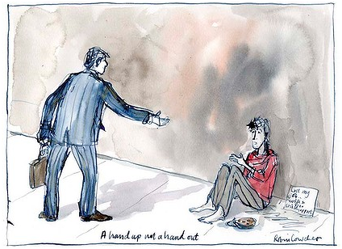

No more poor excuses
Don Edgar
April 26, 2012
OPINION

End the cosy culture of entitlements to the poor? It's the rich who feel entitled.
SHADOW treasurer Joe Hockey has called for an end to the ''culture of entitlement'' so we live within our means. But in such a debate, the pejorative term ''welfare benefits'' must go, replaced by real needs, equal rights and the common good.
George Bernard Shaw's Pygmalion character Alfred Doolittle laments his lot as one of the ''undeserving poor'': "Think what it means to a man … he's up against middle-class morality all the time … 'You're undeserving, so you can't have it' … I don't need less than a deserving man: I need more …''
Doolittle was right. Evidence suggests it is rich, well-educated, higher-status people who feel entitled, not the poor.
A Berkeley University study last year found that people in the upper echelons of society were more likely to lie, cheat, take things meant for others, cut off other road users and endorse unethical behaviour in others. Why? Because they feel entitled. They are clever and have the money to cut corners and hire lawyers if needed. These elite are less empathetic to others, less altruistic, more individualistic and more greedy.
Another study by Professor Howard Gardner at Harvard University, on the meaning of ''good work'', asked professionals how they juggled their ambition to succeed against their desire to work responsibly and ethically. They claimed that values such as fairness, scientific objectivity, truthful reporting and work-life balance were important to them. But, in practice, many compromise these principles to advance in their professions. They will, they say, change their behaviour once established and successful.
Gardner says they know the difference between right and wrong but lack exemplars of ''good work''. Post-modern relativism has undermined belief in the efficacy of universal values such as truth, honesty, fairness and goodness. People have been programmed to compete, distrust others and feel entitled because they are brainier, more hard-working or more ambitious than others. They are ''the deserving'', yet lack the morality on which a fair and equitable society must be based.
Hockey is right to suggest we must spend our tax money wisely, but he has a few blind spots. The UN Declaration of Human Rights offers a reasonable framework. Article 25 asserts: "Everyone has the right to a standard of living adequate for the health and well-being - and the right to security in the event of unemployment, sickness, disability, widowhood, old age or other lack of livelihood in circumstances beyond his control."
The crucial proviso (Article 24) is that these shall be provided within the country's limits; they are not fixed entitlements but goals to be met insofar as resources allow.
It's the law which makes rights into entitlements, and it's government actions that produce a so-called ''entitlement mentality''. If the retirement age is set at 55 instead of 65 or 70, if we neglect public education and favour the elite or if we leave tax loopholes for the rich, there won't be enough money for schools and hospitals. It is, as Age writer Tim Colebatch puts it, ''simple arithmetic''.
Most social expenditure in Australia is, in any case, designed to make the economy more efficient, not just as handouts to the disadvantaged. Parental leave is not a handout, nor are disability benefits; they are aimed at keeping people productive and active as citizens of a caring democracy. Childcare is not welfare; it's a crucial grounding for adequate child development and a means of capitalising on women's higher education in an economy short on skills. Good food and health provision are not welfare; they are preventive insurance against later costs of obesity, diabetes and extended, debilitating old age.
The goal should be to raise up the disadvantaged, to shore up the good society for all. Without educated, healthy, well-housed and work-satisfied people, we are all worse off. Inequality harms us all.
Hockey and others should be reminded too that social spending in Australia is nothing like in profligate European regimes. Australia spends only 16 per cent of GDP on so-called ''social entitlements''. Only 0.4 per cent of GDP goes to unemployment benefits, the meanest level in the Western world. Just 2.4 per cent goes to family benefits, aimed at ensuring women (now well educated and productive) can have paid jobs as well as manage childcare. The biggest payments are for health (5.7 per cent) and old age (4.3), both states of life that are universal, not confined to the ''undeserving poor''. No political party can afford to undermine such essential services in a decent society.
We already means-test payments more than any other OECD country, have compulsory superannuation and are not yet living beyond our means.
It is, in any event, a travesty of policy to define the debate in terms of individual moral failures. Tragedy and misfortune can strike a family at any time; the global crisis throws people out of work, not their own laziness; floods and fires destroy people's homes and livelihoods; a mother who stays at home to care for children is doing work of value to us all and probably has before, and will later contribute in the paid labour force as well.
Social policy should be based on a wider morality of ensuring equal opportunity for quality education and training, room for choice and flexibility in the workplace, respect for human rights and an expectation that every citizen will contribute responsibly to the wider common good. We should not pit the ''deserving'' against the ''undeserving poor'', or we will all be poorer in every way.
Dr Don Edgar is a sociologist. He will chair a forum on May 7 at University College, Melbourne University, titled ''Re-imagining Values for the 21st Century''.